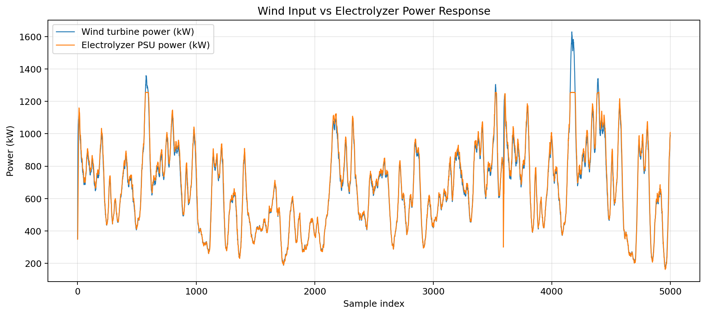
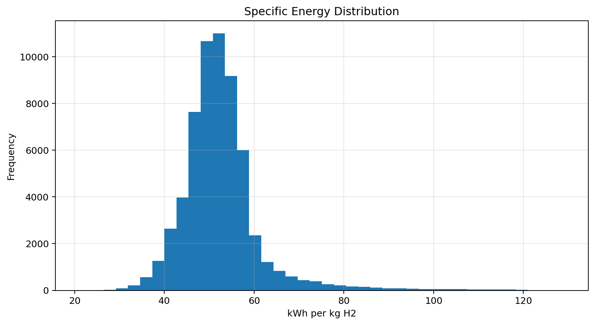
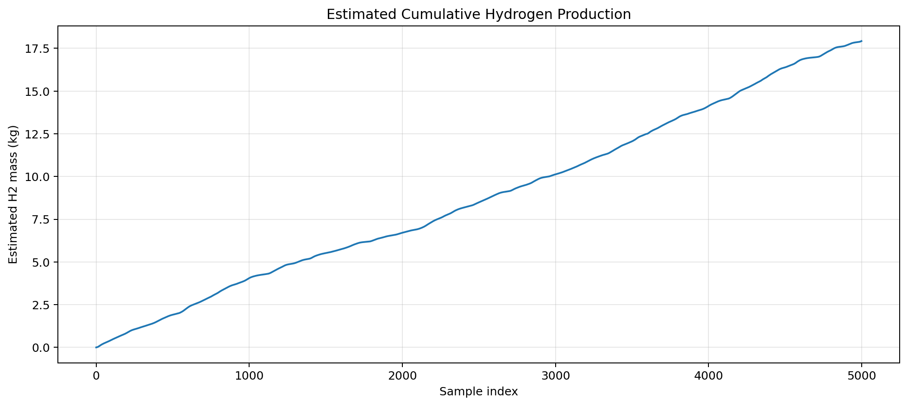
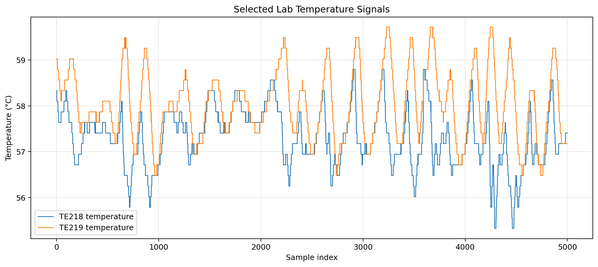
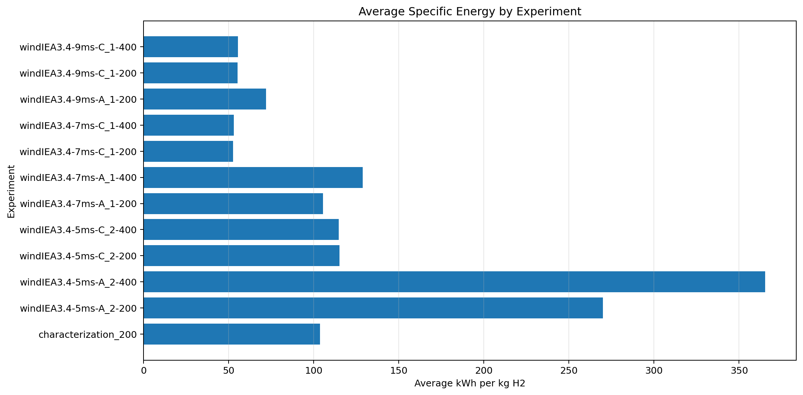

Green Hydrogen Lab Data Analysis Dashboard
Python dashboard using public megawatt-scale electrolysis data.
total_energy_kwh_est
11377.58
avg_specific_energy_kwh_per_kg
115.77
median_specific_energy_kwh_per_kg
51.66
median_power_tracking_ratio
1.017
01 Power Response

02 Specific Energy Distribution

03 Cumulative H2 Production

04 Temperature Trends

05 Experiment Efficiency Comparison

Project summary:
This dashboard cleans and analyzes public hydrogen electrolysis time-series data,
calculates operational KPIs, and visualizes energy use, hydrogen production,
power response, and temperature behavior for green hydrogen lab analysis.